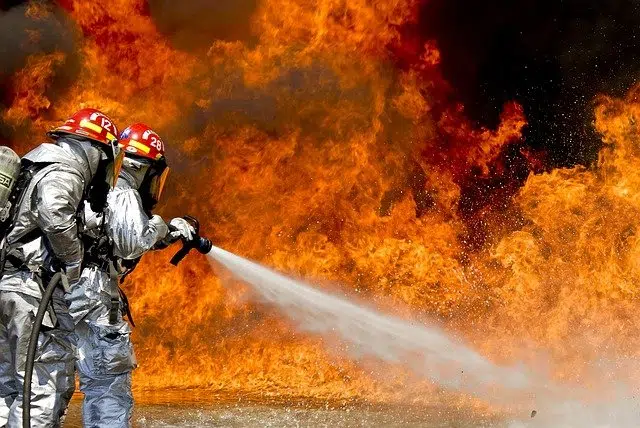

El Fuego
Del latín focus, el fuego es el calor y la luz producidos por la combustión. El fuego nace a partir de una reacción química de oxidación y supone la generación de llamas y la emanación de vapor de agua y dióxido de carbono. Podría decirse que el fuego es la manifestación visual del mencionado proceso de combustión. Se conoce como punto de ignición a la temperatura en la cual un material se prende fuego. Al comenzar la reacción de oxidación, el calor que se desprende permite mantener el fuego durante un cierto periodo de tiempo. La cantidad de energía producida por un combustible puede ser expresada mediante su poder calorífico. La temperatura y el color de la llama dependen del tipo de gases desprendidos durante el proceso de combustión. La madera, al arder, genera llamas anaranjadas, rojas y amarillas. Los hidrocarburos, en cambio, suelen producir llamas azuladas.

El ser humano y el fuego
El valor cultural del fuego en el desarrollo del hombre es incalculable. Los antropólogos creen que el ser humano tomó conciencia de su superioridad sobre los demás animales al dominar el fuego. Cuando el hombre descubrió cómo generarlo, comenzó a utilizarlo para producir calor y defenderse, ya que los animales huyen de las llamas. La fricción fue el método originario para encender fuego, seguido por la percusión (chocar dos piedras para producir una chispa). En la actualidad, puede encenderse fuego gracias a herramientas como las cerillas o fósforos y los encendedores. Además de todo lo expuesto no podemos pasar por alto que también se hace uso del término fuego para referirse a los quemadores que se emplean en la cocina para preparar cualquier plato.
